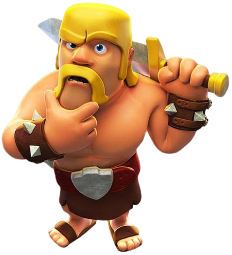
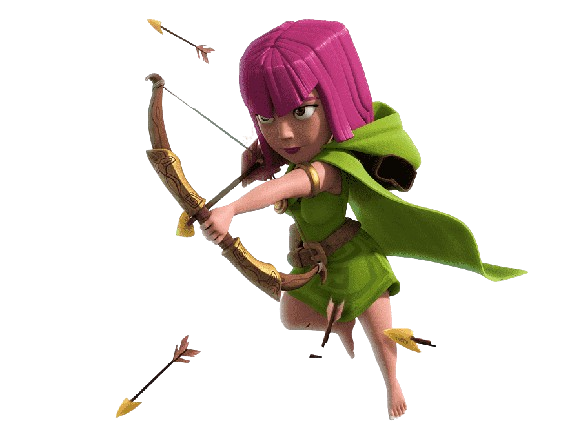

Na jornada por glória e honra, junte-se ao nosso clã, onde o destino é forjado em batalhas épicas e alianças são tão fortes quanto aço!

Regras
IDENTIFICAÇÃO e INTERAÇÃO:
Todo membro novo ao se filiar deve se identificar, falar com os membros, anciões, co-líder e líder.
Participe do chat do clã. Interaja! Muitos querem conhecer você também.
Participe do chat do clã. Interaja! Muitos querem conhecer você também.
RESPEITO:
Respeite o líder e o co-líder. Co-líderes e anciões mais novos devem acatar as decisões dos mais antigos, e evitar discussões no chat do clã. Antiguidade é posto!
Como existem jogadores de todas as idades e diferentes culturas, destacamos que é muito importante manter o respeito por todos os membros do clã, por isso é proibido o uso de palavrões no chat. Não serão toleradas palavras agressivas, palavrões, deboche ou semelhantes. A ofensa direta ou indireta qualquer membro do clã é passível de expulsão sumária.
GUERRA:
É obrigatório a participação nas guerras quando iniciadas, necessitando realizar os dois ataques no tempo previsto.
Não é obrigatório atacar seu espelho, mas evite atacar vilas mais fracas que a sua.

AUSÊNCIAS:
Não se deve pedir para ser ancião ou co-líder. Tais postos vêm com o tempo, respeito, confiança, dedicação e boas doações.
Todo membro que for se ausentar do jogo por um período de tempo maior que uma semana, deve avisar a algum co-líder, anciões ou enviar uma mensagem no grupo do WhatsApp, a fim de não ser excluído injustamente.
Não é permitido sair e entrar novamente no clã. Visitas a clãs de amigos ou qualquer coisa do tipo não serão toleradas a menos que tenha autorização do líder ou co-líderes.
OBSERVAÇÕES GERAIS:
Os membros que desejarem devem fornecer o celular para serem inseridos no grupo do whatsapp. O grupo encontra-se ativo, onde podemos decidir questões offline.
O recrutamento de novos jogadores deve ser constante, tanto para membros, anciões, e co-líderes. Busque manter nosso clã sempre ativo. Precisamos da ajuda de todos.
Todo membro que não concordar com as decisões do líder está convidado a se retirar do clã.